Precizní strojírenská výroba & certifikované ocelové konstrukce
Komplexní dodávky od 3D CAD/FEM návrhu, přes zakázkovou výrobu a certifikované svařování, až po montáž a autorizovaný servis v průmyslových provozech po celé ČR.
Svařované konstrukce EXC1–EXC3
Rozebíratelné i nerozebíratelné nosné konstrukce, pochozí lávky, schodiště, obslužné plošiny a stožáry od lehkých svařenců po tunové celky.
Statika & 3D dokumentace
Kompletní konstrukční dokumentace, pevnostní výpočty metodou konečných prvků a autorizované statické zprávy před započetím výroby.
Povrchové úpravy C3–C5
Žárové a galvanické zinkování, dvousložkové průmyslové nástřiky C3-C5 i práškové lakování (komaxit) ve všech odstínech vzorníku RAL.
Speciální manipulační stroje
Plošiny s mechanismem automatického naklánění palet, hydraulické nůžkové stoly a jednoúčelové zdvihací jednotky do montážních provozů.
Sloupové otočné jeřáby
Elektricky i ručně ovládané dílenské jeřáby, otočné hlavy a mobilní zdvihací vozíky pro manipulaci s těžkými lisovacími nástroji.
Kompletní zprovoznění
Integrace pneumatických prvků Festo/SMC, bezpečnostních obvodů a řídicích jednotek Siemens s CE certifikací a provozním manuálem.
Pásové a válečkové systémy
Odpružené válečkové tratě pro tlumení rázů, přítlačné lomené dopravníky a variabilní pásové linky s frekvenčními měniči.
Přesné náhradní díly
Výroba opotřebených dílů, inovace tvaru vaček, ozubených kol z 42CrMo4, dílů z technického plastu POM-C a pryžokovových komponent.
Modernizace operací
Doplnění stávajících výrobních linek o nové technologické operace, odhlučněné krytování vývěv a bezpečnostní ochranná pletiva.
Pravidelná údržba provozu
Zpracování plánů údržby na míru technologickému zařízení a preventivní inspekce zamezující neplánovaným odstávkám linky.
Rychlé odstranění závad
Okamžitá lokalizace mechanických a pneumatických poruch strojů s rychlou výrobou či opravou poškozených dílců v naší dílně.
Strojní zámečnictví u zákazníka
Zkušení mechanici provádí montáže, ustavení strojních os, slícování konstrukčních celků i dlouhodobé údržbové práce na vašich linkách.
Od návrhu po servis: Uzavřený inženýrský cyklus
Každému projektu se pečlivě věnujeme – od drobného náhradního dílu po složitou výrobní linku.
Návrh & FEM analýza
Navrhneme řešení na míru vašim požadavkům. Zpracujeme 3D CAD model, pevnostní výpočty a statickou zprávu s detailním představením konstrukce.
Zakázková výroba
Vlastní výroba v areálu Moravských železáren v Olomouci. Dělení materiálu, přesné obrábění, certifikované svařování a antikorozní povrchová úprava.
Doprava & Montáž
Dopravíme zařízení přímo do vašeho výrobního závodu, provedeme odbornou montáž, mechanické ustavení, zapojení a zprovoznění předáním obsluze.
Záruční & pozáruční servis
Zajišťujeme trvalý provoz. Vypracujeme servisní plán údržby, dodáváme opotřebitelné díly a provádíme rychlé opravy přímo u zákazníka.
Svařované ocelové konstrukce dle ČSN EN 1090-2
Vyrábíme široké spektrum rozebíratelných i nerozebíratelných svařovaných konstrukcí od menších svařenců až po velké nosné sestavy o hmotnosti několika tun.
Kompletní proces dodávky
- Tvorba návrhové, konstrukční a výrobní 3D dokumentace
- Pevnostní FEM výpočty se statickou posudkovou zprávou
- Přesné dělení, tváření a sestavování dílců
- Certifikované svařování dle ČSN EN ISO 3834-2 a EN 1090-2
- Povrchová úprava dle požadavku zákazníka (zinek / lak)
- Doprava a profesionální montáž v areálu klienta
Typické technologické a stavební konstrukce
- Ocelové technologické svařované rámy dle zadání
- Nosné konstrukce výrobních strojů a agregátů
- Pochozí plošiny pro bezpečnou obsluhu zařízení
- Pochozí lávky pro přemostění dopravníků a tratí
- Průmyslová schodiště a normovaná zábradlí
- Svařence dopravníků, věže, stožáry a technologické přístavby
Zpracovávané materiály
- Uhlíkové konstrukční oceli: jakosti S235JR až S355J2+N
- Nerezové oceli: austenitické oceli AISI 304, AISI 316
- Hliníkové slitiny: svařování a konstrukční profily
- Otěruvzdorné materiály: Hardox pro namáhané břity a skluzy
- Technické plasty: POM-C, PA6, PTFE pro kluzná vedení
Certifikované povrchové úpravy
- Nátěr a lakování: průmyslové nátěry ve zvoleném odstínu RAL
- Žárové zinkování: ponorem dle normy ČSN EN ISO 1461
- Galvanické zinkování: pro přesné spojovací a mechanické díly
- Práškové lakování: vysoce odolné komaxitování pro interiéry
- Korozní odolnost: navrhováno pro třídy korozní agresivity C2–C5
Produkty, jednoúčelové stroje & výrobní linky
Realizujeme jak kompletní výrobky a nová zařízení na klíč, tak subdodávky jednotlivých operací, renovace a zvýšení životnosti dílů.
Výrobky
Komplexní výroba strojírenských výrobků i dílčí operace pro externí dodavatele.
- Výroba celého výrobku na klíč
- Realizace jedné či více technologických operací
- Přesné obrábění, svařování a povrchová úprava
- Kontrolní montáž a zkoušky funkčnosti
Náhradní díly
Řešení pro opotřebené, nedostupné nebo předčasně selhávající komponenty.
- Oprava a renovace stávajícího opotřebeného dílu
- Výroba zcela nového dílu dle vzoru nebo výkresu
- Inovace tvaru, rozměrů a materiálu pro delší životnost
- Odborná výměna a seřízení přímo na stroji
Výrobní linky
Rekonstrukce stávajících tras i návrh nových plně integrovaných linek.
- Renovace a modernizace stávající výrobní linky
- Rozšíření stávající linky o nové technologické operace
- Vývoj nové samostatné technologické linky
- Začlenění nové linky do stávajícího provozu
Jednoúčelová zařízení
Stroje konstruované na míru specifickým výrobním operacím zákazníka.
- Oprava, repase a renovace stávajících zařízení
- Úprava a rozšíření (upgrade) funkcí stroje
- Konstrukce a výroba nového jednoúčelového zařízení
- Dodávka včetně pneumatiky, elektro a CE dokumentace
Průmyslový servis výrobních zařízení & montáže
Spolehlivý servisní partner pro plynulý chod vašeho výrobního závodu bez nákladných neplánovaných výpadků.
Zajištění výrobního provozu
Lokalizujeme skryté závady, navrhujeme technické řešení a garantujeme rychlou nápravu.
Systematické zjišťování příčiny vibrací, geometrických nepřesností a selhání mechanismů.
Přesná kalkulace odstávky a harmonogram prací sladěný s vašimi výrobními směnami.
Vypracování dlouhodobého plánu mazání, seřizování a preventivní výměny namáhaných dílů.
Zámečnické a mechanické práce u zákazníka
Naši zkušení strojní mechanici přijedou přímo do vašeho areálu s kompletním vybavením.
Rychlá oprava poruchy, havárie či neodkladná montáž nového uzlu na výrobní lince.
Pravidelný smluvní outsourcing údržby strojního parku pro výrobní podniky bez vlastní údržby.
Stavení ocelových konstrukcí, jeřábových drah, oplocení a dopravníkových linek na klíč.
Katalog technických řešení a realizací
Prohlédněte si výběr z našich 28 technických realizací – ocelové konstrukce, linky, speciální manipulátory i zakázkové náhradní díly.
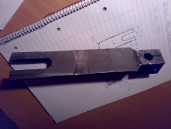
Inovace opotřebeného náhradního dílu
Počáteční fáze inovace a optimalizace geometrie opotřebeného dílu pro zvýšení provozní životnosti stroje.
Zobrazit technické parametry →Konstrukční návrh zdvihacího zařízení
Prvotní technické náčrtky, kinematická studie a koncepční návrh speciálního zdvihacího mechanismu.
Zobrazit technické parametry →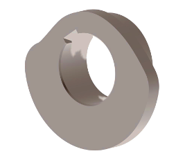
Tvarová optimalizace výrobní vačky
Matematický a CAD návrh přesné křivky vačkového mechanismu pro plynulý chod výrobního automatu.
Zobrazit technické parametry →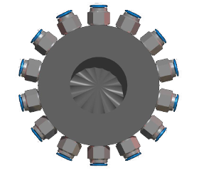
Pneumatická rozvodová skříň výrobní linky
Inženýrská studie a montážní návrh pneumatických a elektro-pneumatických rozvodů pro technologickou linku.
Zobrazit technické parametry →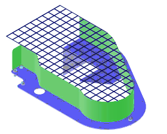
Bezpečnostní kryt řemenového rozvodu
Konstrukční návrh pevného ochranného krytování řemenového převodu splňující přísné normy BOZP.
Zobrazit technické parametry →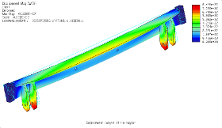
FEM pevnostní výpočet nosníku zdvihacího zařízení
Pevnostní a dynamická analýza nosné ocelové konstrukce metodou konečných prvků včetně statické zprávy.
Zobrazit technické parametry →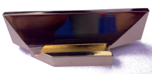
Tvarově složitý přesný mosazný díl
Vysoce přesný rotačně frézovaný díl s leštěným funkčním povrchem pro chemické a potravinářské provozy.
Zobrazit technické parametry →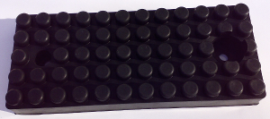
Pryžokovový díl s vysokou odolností proti otěru
Náhradní díl pro těžké abrazivní provozy s vysokými nároky na tlumení rázů a odolnost proti opotřebení.
Zobrazit technické parametry →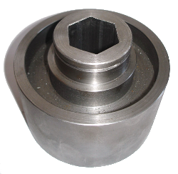
Ocelové pevnostní kolo pro přenos momentu
Masivní ozubené hnací kolo určené pro přenos vysokých kroutících momentů v těžkém strojírenství.
Zobrazit technické parametry →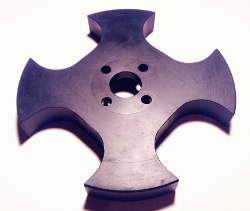
Maltézský kříž z technického plastu
Přesný krokový mechanismus maltézského kříže pro cyklické polohování montážních stolů a karuselů.
Zobrazit technické parametry →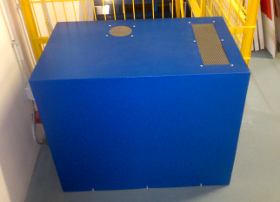
Akustické zakrytování a odhlučnění vývěvy
Komplexní protihlukový a ochranný kryt pro snížení hladiny hluku vakuových vývěv a kompresorů.
Zobrazit technické parametry →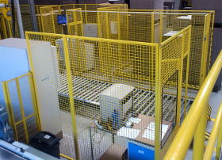
Bezpečnostní pletiva a ochranné zábrany
Modulární bezpečnostní oplocení robotických pracovišť, lisoven a dopravníkových tras.
Zobrazit technické parametry →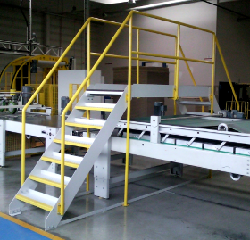
Přemostění dopravníkové trasy pochozí lávkou
Bezpečný přechod obsluhy přes výrobní a dopravníkové linky s protiskluzovými rošty a normovaným zábradlím.
Zobrazit technické parametry →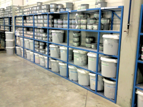
Průmyslové regály pro skladování barev a chemikálií
Těžké skladovací regály s vysokou nosností police a integrovanou záchytnou vanou pro hořlavé kapaliny.
Zobrazit technické parametry →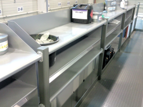
Ergonomické skladovací police na zábradlí stroje
Zakázkové odkládací police montovatelné přímo na konstrukce a zábradlí strojů pro zrychlení práce obsluhy.
Zobrazit technické parametry →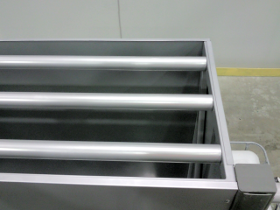
Závěsné boxy pro zavážení materiálu do výroby
Robustní transportní boxy uzpůsobené pro manipulaci mostovým jeřábem i vidlicovým vysokozdvižným vozíkem.
Zobrazit technické parametry →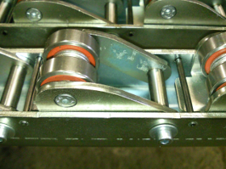
Odpružená válečková dráha technologického dopravníku
Speciální válečková trať absorbující kinetické rázy při ukládání těžkých polotovarů do výrobní linky.
Zobrazit technické parametry →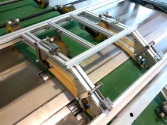
Přítlačný dopravník s lomenou dráhou
Dopravník s lomenou geometrií pro překonávání výškových rozdílů a bezpečné přidržování dílů při transportu.
Zobrazit technické parametry →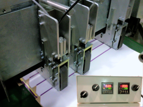
Pneumatický mechanismus dopravníku s PLC řízením
Rychlý třídicí a přesouvací uzel dopravníkové linky s elektronickým snímáním a řízením polohy.
Zobrazit technické parametry →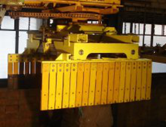
Otočná jeřábová hlava pro manipulaci
Svařovaný otočný mechanismus sloupového či konzolového jeřábu s plynulým otáčením o 360°.
Zobrazit technické parametry →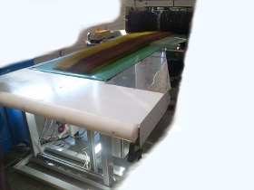
Variabilní pásový dopravník s plynulým řízením
Modulární pásový dopravník s možností rychlého přestavení délky, sklonu a bočního vedení materiálu.
Zobrazit technické parametry →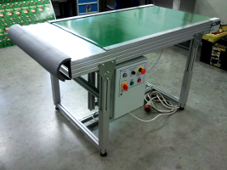
Průmyslový pásový dopravník s elektronickým řízením
Těžký pásový dopravník pro plynulý přesun technologických celků a těžkých boxů ve výrobním taktu.
Zobrazit technické parametry →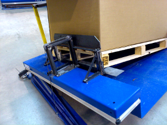
Manipulační plošina s automatickým nakláněním
Ergonomická plošina pro automatické naklápění palet a gitterboxů přímo do zorného pole montážního dělníka.
Zobrazit technické parametry →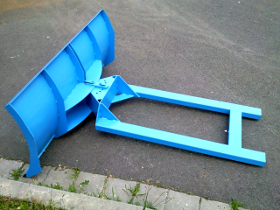
Průmyslová radlice na sníh a materiál pro VZV
Přídavné zařízení na vidlice vysokozdvižného vozíku pro rychlý úklid areálu a manipulaci sypkých hmot.
Zobrazit technické parametry →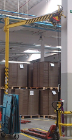
Elektricky ovládaný sloupový otočný jeřáb
Kompletní výroba a montáž dílenského sloupového jeřábu s elektrickým řetězovým kladkostrojem.
Zobrazit technické parametry →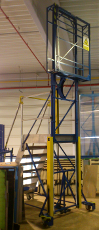
Dílenský zdvihací vozík s manuálním pohonem
Kompaktní dílenský vozík pro přesnou instalaci lisovacích nástrojů a těžkých přípravků na stoly strojů.
Zobrazit technické parametry →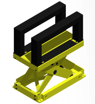
Hydraulická nůžková zdvihací plošina
Stacionární nůžkový zvedák pro překonávání výškových úrovní a ergonomické paletizační práce.
Zobrazit technické parametry →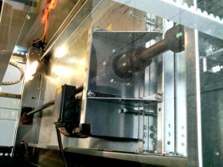
Plošinové zdvihací zařízení s přesným vedením
Technologický vertikální manipulátor pro dopravu materiálu mezi montážními patry technologie.
Zobrazit technické parametry →Inženýrská zkušenost & výrobní zázemí v Olomouci
Dlouholetá tradice od roku 2000 pod vedením autorizovaného strojního inženýra Ing. Jiřího Krbečka.
Ing. Jiří Krbeček – Jednatel & Hlavní inženýr
Společnost Engineering Partner s.r.o. navazuje na více než 24 let nepřetržité inženýrské praxe Ing. Jiřího Krbečka (zapsán od 12.1.2000). Vycházíme z pevných strojírenských základů, detailních znalostí pevnosti materiálů, kinematiky mechanismů a přísných evropských norem pro ocelové konstrukce.
Naším cílem není sériová výroba tisíců kusů jednoho typu, ale zakázkové řešení technicky náročných problémů průmyslových podniků – od návrhu a optimalizace tvaru vaček, přes výrobu odolných dopravníkových tratí, až po certifikované pochozí lávky a ocelové skelety.
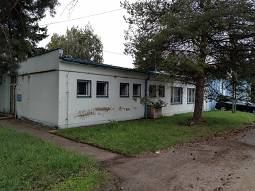
Výrobní provozovna v průmyslovém srdci Olomouce
Naše dílna a montážní prostory se nachází přímo v historickém areálu firmy Moravské železárny, a.s. v Olomouci – Řepčíně (IČP: 1012994091).
📍 Adresa areálu: Řepčínská 35/86, 779 00 Olomouc - Řepčín
Navštívit provozovnu po dohoděPoptávka výroby & Technická konzultace
Odpovíme obratem a navrhneme optimální technický i výrobní postup pro váš projekt.
Kontaktní spojení
779 00 Olomouc - Řepčín
Urxova 461/13, 779 00 Olomouc
IČO: 09700668 | DIČ: CZ7407305378
Nezávazný poptávkový formulář
Zašlete nám specifikaci, výkresovou dokumentaci nebo popis problému k vyřešení.